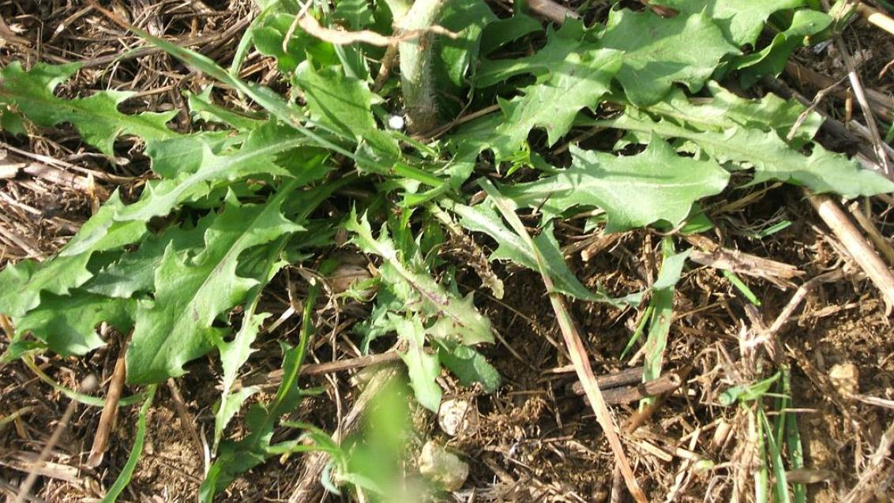

Ayuntamiento de Senés
JARDIN BOTANICO DE ESPECIES AUTOCTONAS DE SENES

Cichorium intybus

La achicoria (Cichorium intybus) es una planta herbácea perenne muy común en caminos, campos y terrenos abiertos del ámbito mediterráneo. Se distingue fácilmente por sus flores de color azul intenso, que aportan un gran valor visual al paisaje.
Puede alcanzar entre 30 cm y más de 1 metro de altura, con un tallo erecto y ramificado. Sus hojas basales son grandes y lobuladas, mientras que las superiores son más pequeñas. Sus flores se abren con la luz del sol y se cierran al atardecer, formando parte de su comportamiento característico.
La achicoria se distribuye ampliamente por Europa, Asia y el norte de África, creciendo de forma espontánea en bordes de caminos, campos abandonados y zonas alteradas.
En la Sierra de los Filabres y en el entorno de Senés, es una planta frecuente en zonas abiertas y soleadas, formando parte del paisaje natural durante gran parte del año.
La achicoria es conocida por sus propiedades digestivas y depurativas. Su raíz contiene inulina, un compuesto beneficioso para el sistema digestivo, y ha sido utilizada tradicionalmente para estimular el apetito y mejorar la función hepática.
También se ha empleado como sustituto del café, tostando su raíz, especialmente en épocas de escasez.
La achicoria simboliza la resistencia y la sencillez, al ser una planta capaz de crecer en condiciones adversas y en terrenos poco fértiles.
Sus flores azules se asocian con la serenidad y la conexión con el entorno natural.
En Senés, la achicoria ha sido conocida principalmente por su uso como planta comestible y medicinal. Sus hojas tiernas se han consumido en ensaladas, bajan el colesterol, azúcar en sangre y es diurético
Los agricultores las usaban cuando estaban subidas, para hacer escobas y barrer las eras de trillar.
La achicoria florece desde la primavera hasta finales del verano, produciendo flores azules que se abren durante el día y se cierran al anochecer.
La achicoria es conocida por su uso histórico como sustituto del café, especialmente durante periodos de escasez.
Sus flores siguen el ciclo solar, abriéndose con la luz del día, lo que la convierte en una planta muy ligada al ritmo natural del entorno.